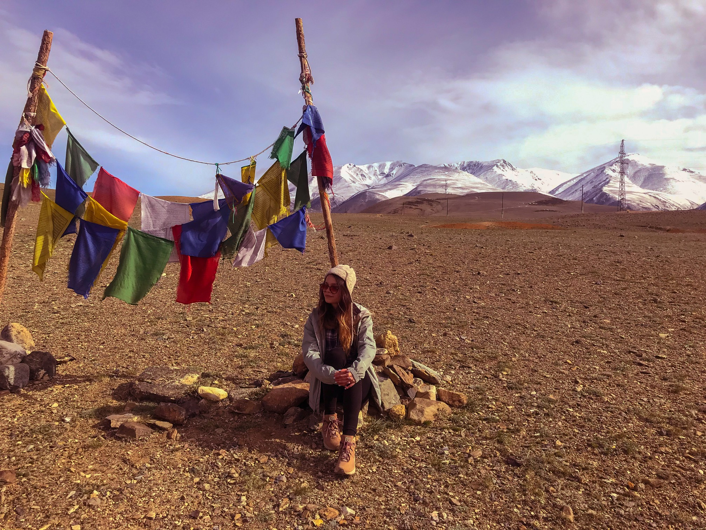
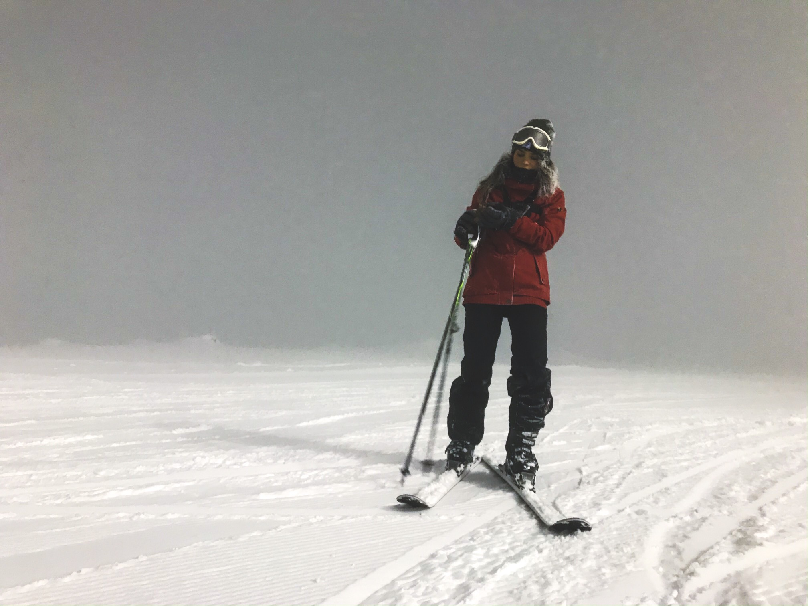
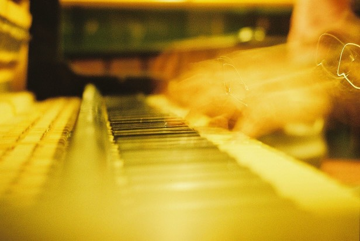

Ветлугина Дарья Алексеевна - студент курса front-end разработчик.
Обо мне
Мне 26 лет, родилась и выросла в г.Санкт-Петербург. Большую часть жизни я учусь, и не собираюсь прекращать. Ведь в этом мире так много интересного можно узнать, так многому можно научиться. Как я могу упускать такие возможности? ☺
Мое бразование.
Основная профессия
Долгое время сомневаясь в выборе профессии, в 2013 году я выбрала медицину. Поступила в Фельдшерский колледж города Санкт-Петербурга, где освоила профессию которая,безусловно, пригодится мне в жизни. Дальнейшие годы я активно развивалась в этой профессиональной сфере, прошла множество курсов повышения квалификации, тренингов.
За время своей основной профессиональной деятельности, я интересовалась различными другими. Постоянно получая знания на различных мероприятиях и курсах. Например:
- Была участником молодежного форума "Всмысле?" в 2017 году
- Прошла курс SMM в молодежном центре Квадрат
Обучение web и front-end разработке
- В настоящий момент прохожу обучение по специальности front-end development на обучающей платформе SkillFactory
- Курс "Основы верстки" на обучающей платформе Нетология
- Множество маленьких дополнительных курсов на Udemy и Stepik, например:
- Основы программирования
- Веб-разработка
- Возможности плагина Emmet
- Тренажер FlexBox
Опыт работы
- 2015г: Создание и продвижение интернет-магазина наручных часов
- 2018-2022г: ⛑СПБ ГБУЗ ГССМП
- 2022г: Cудовой фельдшер на речном круизе
Мои увлечения
Развитие человеческого духа невозможно без нового опыта. к/ф Into the Wild
Хобби у меня много. Так или иначе соприкасаясь с разными занятиями, большинством из них мне хочется увлекаться и дальше. Но в сутках всего 24 часа, а в году всего 365 дней. Поэтому здесь я перечислю, наверно самые частые,из любимых мной, занятий в свободное время, которого всегда так не хватает.
Путешествия
Путешествия в широком смысле слова: как поездки на дальние расстояния, так и вылазки с палатками относительно не далеко от города. Как знакомства с новыми странами и культурами, так и изучение разных интересных мест на родине.Однажды провела 7 дней на острове в Финском заливе с палаткой. Мое самое далекое путешествие, в страну другого полушария - Коста-Рику.
Спорт
Спорт - это то, что всегда помогает мне справляться с различными обстоятельствами. Хайкинг, горные лыжи и сноуборд, походы на каяках - то что позволяет знакомиться с новыми интересными местами. А йога, и обычные физические упражнения - то что позволяет открывать новые возможности внутри себя.
Пленочная фотография
Фотография - это отличное хобби, для запечатления остальных своих хобби. Но если вам интересно разобраться в том, как это работает, если хочется элемента сюрприза, и особой ценности кадра, а так же поспорить с охраной на вокзалах и в аэропортах (пленку лучше не пропускать через рентгены) - займитесь пленочной фотографией.